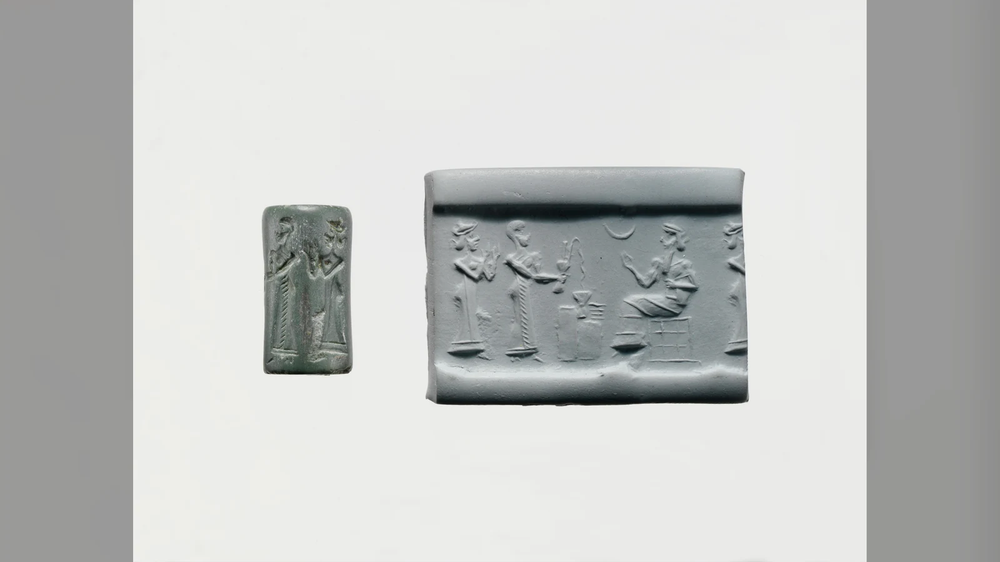
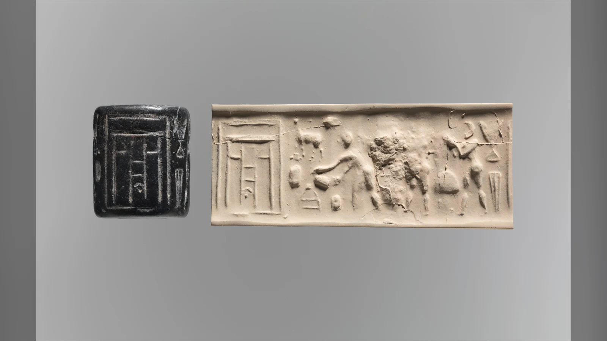
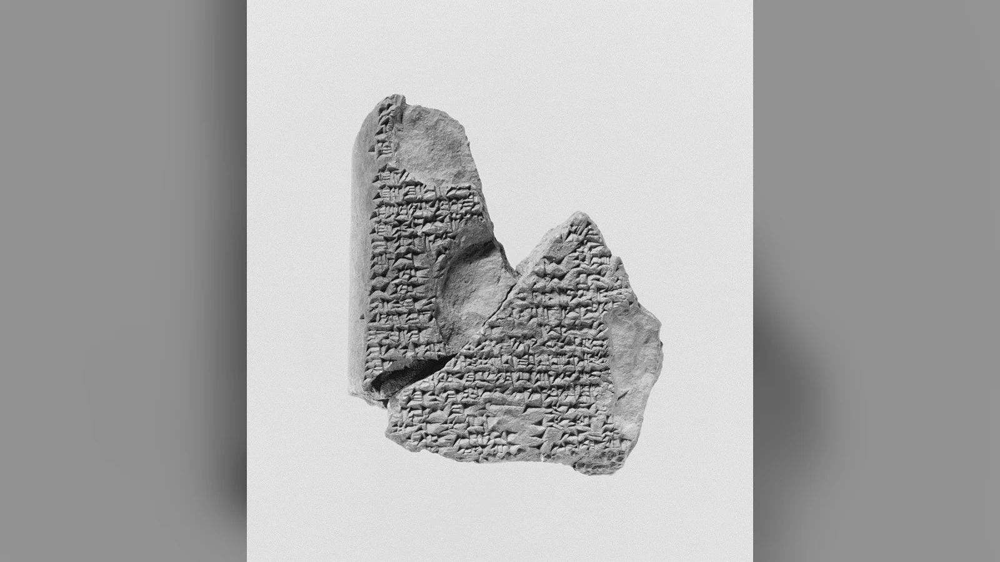
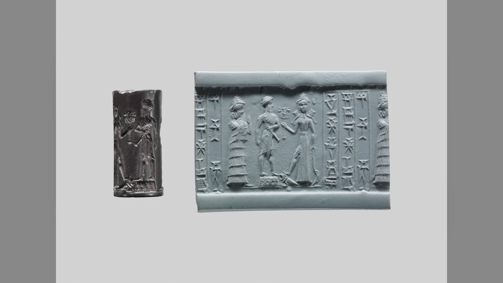
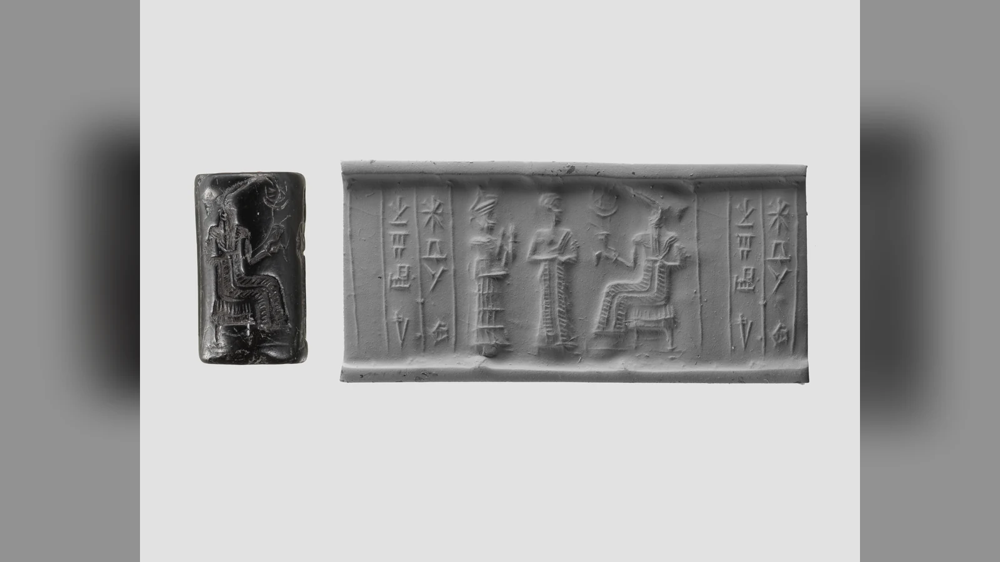
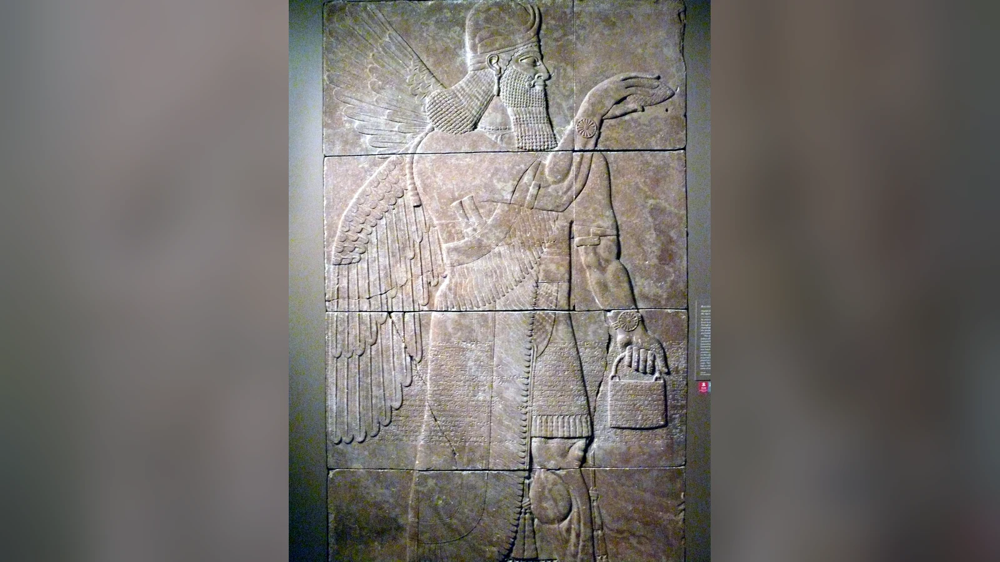

İnanna, yeraltı ülkesinin yedi kapısından geçerken tacını, takılarını ve giysisini birer birer bırakır. Kız kardeşi Ereşkigal’in tahtına oturduğunda, yukarı dünyadaki gücü onu korumaya yetmez. Sümerce İnanna’nın Yeraltına İnişi anlatısında yedi Anunna yargıcı tanrıçaya karşı hüküm verir; ölüm getiren bakışlarıyla onu bir cesede dönüştürürler. İnanna’nın bedeni bir çengele asılır. Bu sahnede Anunnakiler, en güçlü tanrıçalardan birinin bile aşamadığı bir düzenin temsilcileridir.
Başka bir Mezopotamya anlatısında, Atrahasiste, aynı topluluk adı bambaşka bir gerilimin içinde belirir. Kanalları kazan, ağır işi üstlenen İgigi tanrıları artık çalışmak istemez. Tanrılar arasındaki emek krizine bulunan çözüm, insanın yaratılmasıdır. Bir eserde ölüm ülkesinin yargıçları, diğerinde işin kim tarafından yapılacağına karar veren büyük tanrılar: Anunnakilerin antik dünyadaki yerini tek bir hikâyeye sığdırmayı güçleştiren şey bu değişen rollerdir.
Anunnakiler, Sümerce Anunna ve Akadca Anunnaku/Anunnaki biçimleriyle anılan Mezopotamya tanrılar topluluğudur. Sümer, Babil ve Asur geleneklerinde karşılaşılan bu adın bütün metinler için geçerli tek bir üye listesi veya sayısı yoktur. Bugün sıkça onlarla ilişkilendirilen uzay yolculuğu, Nibiru’dan gelen altın madencileri ve insan DNA’sına müdahale hikâyesi ise antik metinlerin doğrulanmış içeriği değildir; modern yorumların ürünüdür. Tabletlerde daha farklı bir dünya vardır: emeğin yükü, tanrısal otoritenin kurulması, insanın yaratılışı ve ölüm karşısında gücün sınırları.
Bu dünyayı anlamak, birkaç tanrı adını sıralamaktan fazlasını gerektirir. Aynı kelimeyi kullanan metinler farklı dillerde, farklı şehirlerde ve yüzyıllar arayla yazılmıştır. Anunnakilerin kimliği de bu uzun aktarımın içinde değişir. Onları ilgi çekici kılan, tek bir gizli olayın kahramanları olmaları değil, Mezopotamya toplumlarının düzen ve insan hayatı hakkındaki düşüncelerini farklı anlatılarda görünür kılmalarıdır.
Anunnakiler Kimdir ve Hangi Uygarlığa Aittir?
Mezopotamya, Dicle ve Fırat çevresinde gelişen şehirleri, krallıkları ve imparatorlukları kapsayan geniş tarihsel coğrafyadır. Sümer kentleri, Akad yönetimleri, Babil krallıkları ve Asur devletleri aynı coğrafyada birbirinden farklı dönemlerde etkili oldu. Dinî gelenekleri arasında devamlılık vardı; fakat aynı tanrının adı, görevi ve başka tanrılarla ilişkisi bütün bu zaman boyunca değişmeden kalmadı. Anunnaki adı da bu uzun süreli aktarımın parçasıdır.
Sümerce metinlerde genellikle Anunna biçimiyle karşılaşıyoruz. Akadca metinlerde Anunnaku ve Anunnaki biçimleri kullanılır. Akadca, Babilce ve Asurca diye adlandırdığımız dil geleneklerinin ortak zeminini oluşturur; Sümerce ise ondan ayrı bir dildir. Her iki dil de çivi yazısıyla kaydedilmiştir. Çivi yazısı başlı başına bir dil değil, farklı dillerin yazılabildiği işaret sistemidir. “Kil tablet” yazının taşıyıcısını, “Sümerce metin” dilini belirtir. “Sümer tableti” ise bağlama göre kültürel veya dilsel bir sınıflandırmadır; bir tablette çivi yazısı bulunması onun mutlaka Sümerce olduğu anlamına gelmez.
Oxford ve Pennsylvania merkezli bilimsel metin projelerinin kullandığı sınıflandırma, Anunna’nın çoğu erken Sümerce bağlamda önemli tanrılar topluluğunu ifade ettiğini gösterir. Bazen belirli bir kentin tanrılar topluluğu için de kullanılır. Eridu’nun Anunnaları veya Lagaş çevresindeki tanrısal topluluk gibi ifadeler, her kentte aynı üyelerden oluşan evrensel bir kurul bulunduğu anlamına gelmez. Kentlerin koruyucu tanrıları, tapınakları ve tören gelenekleri farklıydı.
Mezopotamya’da tanrılar günlük hayattan ayrı bir süsleme değildi. Tarımın düzeni, suyun yönetimi, krallığın meşruiyeti, adalet, hastalık, doğum ve ölüm tanrısal güçlerle ilişkilendiriliyordu. Tapınaklar ekonomik ve idarî hayatta önemli yer tutuyordu. Bir kentin tanrısının onurlandırılması, o kentin siyasi kimliğini de güçlendirebiliyordu. Anunnaki gibi topluluk adları bu geniş dünyanın içinde anlam kazanır: Tanrılar tek tek adlarıyla çağrılabildiği gibi bir arada karar veren veya düzeni temsil eden grup olarak da düşünülebilirdi.
Bu yüzden “Anunnakiler Sümerlere mi, Babillilere mi ait?” sorusuna tek kelimelik cevap vermek yanıltıcı olur. Terimin Sümerce kökleri vardır ve sonraki Akadca geleneklerde de yaşamıştır. Babil ve Asur metinleri eski malzemeyi devralmış, yeniden işlemiş ve kimi zaman farklı vurgularla kullanmıştır. Anunnakilerin tarihini bir uygarlığın sınırına hapsetmek yerine Mezopotamya metinlerinin dolaşım tarihi içinde izlemek daha açıklayıcıdır.

Anunnaki Ne Demek? Adın Kökeni ve Yanlış Çeviriler
Anunnaki kelimesi için internette en çok karşılaşılan açıklamalardan biri “gökten yere inenler”dir. Bu ifade çarpıcı olduğu için kolay hatırlanır; ancak uzmanların kabul ettiği doğrudan filolojik çeviri değildir. ORACC bünyesindeki Ancient Mesopotamian Gods and Goddesses projesinde Nicole Brisch’in hazırladığı Anunna maddesi, adın anlamının tartışıldığını ve güçlü önerilerden birinin “soylu/prenslik soyundan olanlar” yönünde olduğunu belirtir. Buradaki temel fikir, bir tanrısal topluluğun köken ve statü bakımından adlandırılmasıdır.
Sümerce an sözcüğünün “gök” anlamı taşıması, bütün kelimenin “gökten Dünya’ya iniş yapan canlılar” diye çevrilebileceğini göstermez. Bir kelimeyi sesçe benzeyen küçük parçalara ayırıp her parçaya modern hikâyeye uygun anlam yüklemek, dilbilimsel çözümleme değildir. Sözcüklerin biçimleri, tarihsel yazımları, dilin grameri ve çağdaş metinlerdeki kullanımları birlikte incelenmelidir. Özellikle Akadca biçimlerdeki eklerin rastgele Türkçe veya İngilizce karşılıklarla yorumlanması yanlış sonuçlar üretir.
Antik metinlerde tanrı adlarından önce kullanılan özel işaretler de yanlış anlaşılmaya açıktır. Çivi yazısında tanrısallığı belirten işaret, modern yayında çoğunlukla üst simgeyle gösterilir. Bu işaret her geçtiğinde seslendirilmesi gereken ayrı bir sözcük değildir; yazıcının okura bir adın tanrıya ait olduğunu bildirmesini sağlayabilir. “Tablet üzerinde gizli kod” gibi görünen birçok ayrıntı, aslında yazı sisteminin olağan işleyişine aittir.
Anunna, Anunnaku ve Anunnaki yazımları ayrı tanrı topluluklarının adları değildir. Bunlar farklı dillerin ve yazım geleneklerinin ilişkilendirdiği biçimlerdir. Modern Türkçede yaygınlaşan “Anunnakiler” ifadesi ise zaten çoğul bir grup adı olan sözcüğe Türkçe çoğul eki eklenmesiyle oluşmuştur. Günlük dilde anlaşılırdır; fakat bilimsel kaynaklarda farklı yazımlarla karşılaşmak normaldir.
Tanrıların Sayısı ve Üyeleri Neden Sabit Değil?
Anunnakilerin kaç kişi olduğu sorusunun tek bir rakamla cevaplanamaması, tabletlerin eksikliği kadar adın işleviyle de ilgilidir. Anunna çoğu zaman özel isimlerden oluşan kapalı bir kulübün adı değil, belirli bir tanrısal topluluğu işaret eden kolektif terimdir. Bir kentteki tanrıların bir bölümü bu ad altında anılabilirken başka bir anlatıda çok daha geniş veya farklı bir grup kastedilebilir.
ORACC’nin Anunna maddesi, bir Sümerce metinde “Eridu’nun elli Anunnası” ifadesine işaret eder. İnanna’nın Yeraltına İnişi anlatısında ise yedi Anunna yargıcı vardır. Babil yaratılış destanı Enūma Elišin altıncı tabletinde gök ve yeraltı görevleri için üçer yüz tanrının ayrılmasıyla altı yüz Anunna söz konusu olur. Bu rakamlar birbirinin yanlış kopyası değildir; farklı eserlerde farklı görevlerle ortaya çıkan sayılardır. “Anunnakiler kesin olarak yedidir” ya da “kesin olarak altı yüzdür” demek bu ayrımı siler.
Yedi sayısının yeraltı yargıçlarıyla bağlantısı belirli bir anlatı için anlamlıdır. Altı yüz sayısı ise Babil kozmik düzeninin ve Marduk’un tanrılar üzerindeki otoritesinin anlatıldığı başka bir bağlamda kullanılır. Elli sayısı bir kent topluluğuna ilişkindir. Sayıları birbirine eklemek veya en yüksek olanı “gerçek nüfus” saymak, edebî metnin işlevini gözden kaçırır. Mitolojik tanrı sayıları modern nüfus sayımı gibi çalışmaz.
Anu, Enlil ve Enki Mezopotamya’nın en önemli figürleri arasında yer alır ve Anunna topluluğuyla çeşitli biçimlerde ilişkilendirilir. An/Anu gök ve tanrısal otoriteyle, Enlil krallık ve hükümle, Enki/Ea bilgelik, tatlı sular ve yaratıcı çözümlerle bağlantılıdır. Fakat bütün metinlere uygulanabilecek sabit bir “Anunnaki kralı, yardımcısı ve yedi komutanı” listesi yoktur. Özellikle bir tanrının başka tanrının oğlu olarak gösterilmesi, anlatının yazıldığı döneme ve yerel geleneğe göre değişebilir.
Anu için “Anunnakilerin babası” ifadesine rastlanması, bütün üyelerin biyolojik anlamda tek babadan doğduğu ayrıntılı bir soy ağacını zorunlu kılmaz. Antik dinî dilde babalık, üstünlük ve köken bildiren siyasi-dinî bir ifade de olabilir. Bir tanrının bir metinde üst otorite, diğerinde başka bir tanrının kararına uyan figür olarak görünmesi yerel ve tarihsel bağlamıyla değerlendirilmelidir. Mezopotamya tanrılar dünyası, modern kurgu evrenleri gibi tek yazarın denetlediği değişmez karakter dosyalarından oluşmuyordu.
Anu, Enlil ve Enki: Tanrısal Otoritenin Farklı Yüzleri
Anu, Enlil ve Enki, Anunnaki adı çevresinde en sık karşılaşılan tanrılardır. Ancak aralarındaki ilişkiyi anlayabilmek için onları sabit bir yönetim şemasından çıkarıp ait oldukları kentlere yerleştirmek gerekir. Uruk, Nippur ve Eridu’nun dinî gelenekleri aynı coğrafyada gelişmiş olsa da her şehrin tanrısal otoriteyi kurma biçimi ve öne çıkardığı figür farklıydı.
Sümerce An, Akadca Anu, gök tanrısıdır. Uruk’ta önemli bir kültü bulunur; tanrılar üzerindeki yüksek otoritesi ve krallığın meşruiyetiyle ilişkilendirilir. Anunna topluluğunun An’ın soyuyla bağlantısı, adın kökenine ilişkin açıklamalarda da önem taşır. Bununla birlikte bir tanrının “baba” diye anılması her zaman ayrıntılı bir biyolojik soy ağacı kurmaz: Tanrısal dilde köken, üstünlük ve yetki ilişkileri de babalık ifadesiyle anlatılabilir.
Enlil’in başlıca kült merkezi Nippur’dur. Tanrıların kararları, krallık ve dünyanın düzeni konusunda güçlü bir otorite taşır. Atrahasiste insan nüfusunun gürültüsünden rahatsız olması ve felaket kararlarıyla bağlantısı, modern yorumlarda bazen onu tek boyutlu bir kötü karaktere dönüştürür. Oysa aynı tanrı başka bağlamlarda düzenin ve meşru krallığın dayanağıdır. Anlatının sert kararlarını dönemin felaket, otorite ve sorumluluk düşüncesinden ayırmak, karakteri anlaşılır kılmak yerine daraltır.
Enki’nin merkezi Eridu’dur; Akadca gelenekte Ea adıyla anılır. Yeraltındaki tatlı suların alanı olan abzu, bilgelik, ustalık ve yaratıcı çözümler onunla ilişkilidir. Atrahasiste emek krizinin çözümünü önerir; tufan geleneğinde ise insanın tamamen yok olmasını önleyen bilginin aktarılmasında rol oynar. Enlil ile Enki arasındaki gerilim böylece iki ayrı ihtiyacı karşı karşıya getirir: Düzeni sınırlayıcı kararlarla korumak ve bu kararların insan hayatını bütünüyle ortadan kaldırmasını önlemek.
Babil’in dinî dünyasında Marduk’un, Asur geleneğinde Aşşur’un yükselen konumu bu eski ilişkilerin yeniden düzenlenmesine yol açmıştır. Eski tanrıların adları korunurken üstünlük sıraları ve görevleri değişebilir. Bir kentin tanrısını en yüksek otorite olarak anlatan metin, aynı zamanda o kentin dünyanın içindeki yerini de tanrısal düzlemde açıklar. Anunnakiler bu hareketli ilişkilerin parçasıdır; bütün çağları yöneten tek bir değişmez kurul değildir.
Anunnaki ve İgigi Arasındaki Fark Nedir?
İgigi veya İgigu, Akadca kaynaklarda görülen başka bir tanrılar topluluğunun adıdır. Anunnaki ile ilişkisi özellikle Atrahasis sayesinde tanınır. Destanın başlangıcında büyük Anunnakilerin İgigileri ağır çalışmaya zorladığı anlatılır. İgigiler su kanalları ve emek yüküyle ilişkili işlerde yorulur, sonunda buna karşı çıkar. Bu sahnede iki ad arasında açık bir görev ve güç ayrımı vardır.
Ancak Atrahasisteki iş bölümü bütün Mezopotamya mitolojisinin değişmez kuralı değildir. ORACC’nin İgigi maddesi, iki terimi birbirinden ayırmanın her metinde kolay olmadığını açıkça belirtir. Bazı sonraki geleneklerde İgigi göksel tanrılarla, Anunnaki yeraltı tanrılarıyla karşılaştırılır. Başka metinlerde ise adlandırmaların kapsamı örtüşebilir. Bir eserin işlevsel ayrımını evrensel rütbe sistemine dönüştürmek, dönemler arasındaki değişimi siler.
İgigilerin başkaldırısı, Atrahasiste yalnız bir şikâyet olarak kalmaz. Tanrılar aletlerini yakar ve gece Enlil’in bulunduğu yere yönelir. Enlil’in önce isyanı bastırmaya dönük tavrı ile Ea’nın emek yükünün ağırlığını dikkate alan çözümü birbirinden ayrılır. Tanrıların toplantısında sorun çalışmanın kendisinden çok, yükün eşitsiz dağılımıdır. İnsanın yaratılması da bu anlaşmazlığın ardından gündeme gelir; anlatının başlangıcındaki çatışma bilinmeden yaratılış sahnesinin gerekçesi eksik kalır.
Bu anlatıda çalışan tanrılar ile karar veren tanrılar arasındaki gerilim gerçek toplumsal deneyimlerle ilişkilendirilebilir. Mezopotamya toplumlarında kanalların açılması, tarımın sürdürülmesi ve büyük yapıların inşası örgütlü emek gerektiriyordu. Metnin ağır işten söz etmesi bu dünyanın okurları için somut bir anlam taşıyordu. Yine de edebî benzerlikten “tablet, belirli bir tarihsel işçi ayaklanmasını kaydediyor” sonucu çıkarılamaz. Burada mitolojik bir neden açıklamasıyla karşı karşıyayız.
Atrahasis Tabletlerinde İnsan Neden Yaratılıyor?
Atrahasis, Anunnakilerle ilgili en önemli Akadca anlatılardan biridir. Eser, tanrıların çalışmak zorunda olduğu bir dönemi anlatarak başlar. İgigiler ağır yükten şikâyet eder ve emek düzenine karşı çıkar. Bunun üzerine tanrılar, işin insanlara devredilmesini sağlayacak bir çözüm arar. İnsan yaratılışının gerekçesi bu bağlamda tanrıların yükünü hafifletmektir. Modern okura tuhaf gelebilecek bu gerekçe, Mezopotamya’nın tapınak ve hizmet anlayışıyla ilişkilidir.
Eserin en eski bilinen geniş nüshası, MÖ 17. yüzyılın ikinci yarısında İpiq-Aya adlı bir yazıcı tarafından üç büyük tablete kopyalanmıştır. Tabletlerin sonundaki kayıtlar yazıcının adını, unvanını ve yazım tarihlerini taşır. Burada tarihleyebildiğimiz şey elimizdeki nüshadır; anlatının bütün motiflerinin ilk kez o gün ortaya çıktığı söylenemez. Aynı dönemde başka nüshaların bulunması ve daha sonraki yüzyıllarda yeniden kopyalanması, Atrahasisin tek bir tabletle sınırlı kalmayan bir edebî gelenek olduğunu gösterir.
Anlatıda Enki/Ea ile ana tanrıça Nintu/Mami/Belet-ili’nin rolleri öne çıkar. Kil, öldürülen bir tanrının eti ve kanıyla birleştirilir; böylece insanın ortaya çıkışı anlatılır. Bu malzemeler mitolojik ve ritüel bir dilin parçalarıdır. Antik toplumlarda kil, hem çevrenin en tanıdık maddelerinden biri hem de biçim verilen nesnelerin temel malzemesiydi. Tanrısal unsurun insanın yapısına katılması, insanın neden sıradan bir nesne olmadığını açıklayan dinî düşünceyle ilgilidir.
Burada tanrıların emeği ile insanların toplumsal görevi arasında kurulan ilişki dikkat çekicidir. İnsanların varlığı, tanrısal düzenin sürdürülmesiyle bağlantılıdır. Bu bakış, antik Mezopotamya’da tapınakların yiyecek, içecek, sunu ve hizmet çevresinde örgütlenen dinî yaşamıyla uyumludur. Yine de Atrahasisin her ayrıntısını tapınak ekonomisinin doğrudan tutanağı gibi okumak doğru değildir. Eser edebî bir kompozisyondur; toplumun deneyimlerini mitolojik olay örgüsü içinde işler.
Yaratılıştan sonra anlatı bitmez. İnsanların çoğalması ve çıkardıkları gürültü tanrılar açısından sorun hâline gelir. İnsan nüfusunu sınırlamaya yönelik felaketler ve sonunda tufan kararı gündeme gelir. Enki’nin müdahalesiyle Atrahasis kurtulur. Böylece insanın yaratılış nedeni ile insan nüfusunun kontrolü aynı eserde birbirine bağlanır. Tanrılar, emek yükünü devretmek için insanı yaratmışken daha sonra insanların çokluğu karşısında yeni bir sorunla yüzleşir.
Bu gerilim, eserin basit “tanrılar insanı işçi olarak üretti” cümlesinden daha karmaşık olduğunu gösterir. İnsan emeği tanrılar için gereklidir; ama insanın çoğalması ve gürültüsü de tanrısal düzen açısından tehdit olarak anlatılır. İnsanlık bir yandan düzenin parçasıdır, diğer yandan sınırlandırılması gereken varlıklar topluluğudur. Atrahasisin ölüm, doğum ve nüfus üzerine düşünceleri bu ikili ilişkide şekillenir.
Fotoğraftaki Metropolitan Museum tableti, eserin MÖ 7–6. yüzyıllara tarihlenen çok daha geç bir kopyasından parçadır. İlk yaratılış sahnesini değil, tufan anlatısından bir bölümü korur. Bu küçük nesne, bir eserin yaşıyla onu taşıyan nüshanın yaşını ayırmanın önemini somutlaştırır: Eski Babil döneminde bilinen bir anlatı, yüzyıllar sonra başka bir yazıcının elinde yeniden kil üzerine geçirilmiştir.

Enūma Eliš: Marduk’un Düzeni ve Anunnakiler
Babil yaratılış destanı Enūma Eliš, adını “yukarıda henüz…” diye başlayan ilk sözlerinden alır. Yedi tabletlik anlatıda Marduk’un Tiamat’ı yenmesi, evreni düzenlemesi ve tanrılar arasında üstünlük kazanması temel eksendir. Atrahasiste yaratılışı başlatan emek krizi burada daha geniş bir iktidar mücadelesinin içine yerleşir. Anunnakiler, Marduk’un kurduğu düzeni kabul eden ve o düzende görev alan topluluktur.
İnsanın yaratılması altıncı tablette anlatılır. Marduk hizmet yükünü insanlara aktarmayı önerir; savaşın sorumlusu olarak gösterilen Kingu, başka yazımla Qingu, teslim edilir ve öldürülür. İnsanlığı onun kanından yaratan Ea’dır. Böylece yaratılışın tasarlanması ile gerçekleştirilmesi farklı tanrıların rolüne bağlanır. İnsanların görevi tanrılara hizmet etmek, tanrıların iş yükünden kurtulmasını sağlamaktır. Bu sahnede cezalandırma, yaratılış ve düzenin kurulması aynı olayın parçaları hâline gelir.
Ardından Marduk, Anunnakileri üst ve alt gruplara ayırır. Üç yüz tanrıyı gökte görevlendirir; gök ve yeraltı için toplam altı yüz tanrıdan söz edilir. Ancak aynı tabletin daha ilerideki ziyafet sahnesinde üç yüz göksel İgigi ile Apsu’nun altı yüz tanrısı anılır. Metnin içindeki bu ikinci sayılandırma bile bütün anlatıyı tek bir sabit nüfus tablosuna çevirmenin güçlüğünü gösterir. Sayılar ve topluluk adları, geçtikleri sahnenin kendi bağlamıyla okunmalıdır.
Anunnakilerin rolü görev dağılımıyla bitmez. Kendilerini iş yükünden kurtaran Marduk’a karşılık vermek üzere bir tapınak yapmayı teklif ederler. Tuğlaları hazırlar, Babil’de Esagil’i yükseltir, ardından kendi kutsal mekânlarını kurarlar. Tamamlanan yapıda tanrılar bir ziyafette bir araya gelir. İnsanlar tanrıların hizmetini üstlenirken tanrıların kendileri de Marduk’un merkezini inşa eder; anlatının bütün hareketi Babil’de somutlaşan yeni otoriteye yönelir.
Bu sahneler, eserin siyasi ve dinî anlamını daha açık kılar. Babil’in tapınağı yalnız bir şehrin yapısı olarak değil, tanrıların birlikte kurduğu düzenin merkezi olarak sunulur. Marduk’un üstünlüğü diğer tanrıları yok etmekle değil, onların görevlerini, gelirlerini ve toplanma yerlerini belirlemekle pekişir. Buradan çıkarılabilecek makul yorum, kolektif tanrısal otoritenin Babil’in merkezî konumuna bağlandığıdır. Bu bir tarihsel inşaat tutanağı değil, şehrin önemini kozmik ölçekte açıklayan bir anlatıdır.
Eserin ne zaman son biçimini aldığı kesin olarak çözümlenmiş değildir. MÖ ikinci binyılın sonlarında, özellikle I. Nebukadnezar döneminde biçimlendiği yönündeki etkili görüşün yanında farklı tarihlendirmeler de vardır. Günümüze ulaşan nüshaların önemli bölümü ise MÖ birinci binyıla aittir. Bu nedenle bir Geç Babil tabletinin müzede sergilenmesi, destanın ilk kez o dönemde yazıldığı anlamına gelmez. Enūma Eliš de daha eski malzemenin yeni tanrısal ve siyasi düzen içinde yeniden işlendiği bir aktarımın parçasıdır.
Anunnakiler İnsanları Yarattı mı?
Atrahasiste tanrılar insanın yaratılmasına karar verir; Ea ve ana tanrıça bu kararın gerçekleştirilmesinde görev alır. Enūma Elište ise Marduk’un önerisi ve Kingu’nun cezalandırılması öne çıkar. Bu nedenle “Anunnakiler insanı yarattı” cümlesi ancak hangi eserdeki hangi rollerin kastedildiği açıklanırsa anlamlıdır. Mitolojik yaratılış, Mezopotamya geleneğinde tek bir tanrı grubunun her metinde aynı yöntemle gerçekleştirdiği değişmez bir olay değildir.
Sümerce Enki ve Ninmah bunun belirgin örneklerinden biridir. Anlatının başında yine küçük tanrıların ağır işi üstlendiği, kanalları kazıp kili taşıdığı bir dünya vardır. Enki’nin annesi Namma, çalışan tanrıların yakınmasını oğluna götürür. Enki, abzu’nun üst kısmından alınan kilin yoğrulmasını ve doğum tanrıçalarının yardım etmesini ister. Ninmah da bu sürece katılır. İnsan, tanrıların sepet taşıma işini devralacak bir varlık olarak ortaya çıkar; fakat olay örgüsü Atrahasistekiyle bütün ayrıntılarda aynı değildir.
Yaratılışın ardından metin beklenmedik bir yöne ilerler. Enki ile Ninmah’ın karşılaşmasında çeşitli bedensel özelliklere sahip insanlar biçimlendirilir. Enki, her biri için toplumun içinde bir görev veya geçim yolu belirlemeye çalışır. Bu bölümde insanı yaratmak, bir bedeni ortaya çıkarmanın ötesinde onun yaşayabileceği bir yer bulmayı da içerir. Modern tıbbi teşhisleri metindeki her kişiye uygulamak doğru olmaz; ancak eserin bedensel farklılıkla toplumsal işlev arasındaki ilişkiyi düşündüğü açıktır.
Bu üç eserin insana yüklediği anlamlar aynı değildir. Atrahasis emek yükünün aktarılması ile insan nüfusunun sınırlarını, Enūma Eliš yaratılış ile Marduk’un otoritesini, Enki ve Ninmah ise emek ve bedensel farklılık karşısında insanın yerini işler. Ortak kil ve hizmet motifleri, eserlerin bütün olaylarını birleştirmek için yeterli değildir. Farklı ana tanrıçaların adları, tanrıların rolleri ve anlatının vardığı mesele ayrı ayrı korunmalıdır.
İnsan emeğinin tanrısal gerekçeyle açıklanması, bu eserleri yazan toplumların hayatıyla da anlamlı biçimde ilişkilendirilebilir. Kanal bakımı, tarımsal üretim ve tapınakların hizmeti süreklilik gerektiriyordu. İnsanların çalışması bu dünyada geçici bir aksaklık değil, yaşamın temel şartıydı. Mitler bu şartın kökenini tanrılar arasındaki bir iş paylaşımına bağlar. Buradan antik insanların tek bir düşünceye sahip olduğu sonucu çıkmaz; fakat emek yükünün neden yaratılış anlatılarının merkezine yerleştiği daha anlaşılır olur.
İnanna’nın Yeraltına İnişi: Yedi Anunna Yargıcı
Sümerce İnanna’nın Yeraltına İnişi, Anunnakilerin yeraltı dünyasıyla ilişkisinin açıkça görüldüğü metinlerden biridir. İnanna, kız kardeşi Ereşkigal’in hüküm sürdüğü ülkeye inmeye karar verir. Yedi kapıdan geçerken taşıdığı güç ve statü işaretleri alınır. Yeraltının kuralları karşısında yukarı dünyadaki kudreti artık aynı biçimde işlememektedir. Bu düzen, anlatının dramatik gerilimini kurar.
Oxford Üniversitesi’nin birden fazla nüshayı karşılaştırarak kurduğu metinde İnanna, Ereşkigal’i tahtından kaldırıp onun yerine oturur. Anunna adıyla anılan yedi yargıcın hükmü bu hamlenin ardından gelir. Ölüm bakışını yöneltenler yargıçlardır; ölü bedene dönüşen İnanna’dır. Sahne, tanrıçanın başka bir gücün alanına girdiğinde kendi ayrıcalıklarını koruyamadığını gösterir. Yukarı dünyadaki egemenlik, yeraltı ülkesinin kurallarını geçersiz kılmaz.
İnanna’nın yardımcısı Ninşubur, tanrıçanın dönüşü gerçekleşmezse başvuracağı tanrılar için önceden talimat almıştır. Yardım arayışı sonunda Enki’nin müdahalesiyle İnanna canlandırılır. Ancak yeraltından çıkış koşulsuz değildir. Metnin sonraki bölümünde Anunna, onun yerine geçecek birinin bulunmasını ister. Bu sahne de Anunnakilerin yeraltının bağlayıcı düzeniyle ilişkisinin ikinci göstergesidir.
İnanna’ya eşlik eden yeraltı varlıkları, onun yerini alacak kişiyi ararken Ninşubur’un yas tuttuğunu görür. Tanrıça, kendisi için kederlenen yardımcısının götürülmesine karşı çıkar. Dumuzi’ye ulaştıklarında ise onun yas içinde olmadığı anlatılır ve olayın yönü değişir. Anunnaların yerine birini istemesi, bu kişisel karşılaşmalara bağlanan bir zorunluluk yaratır. Kurtuluşun mümkün olması ölüm ülkesinin hükümsüzleştiği anlamına gelmez; bir hayatın geri verilmesi başka bir bedelle karşılanır.
Yeraltı, Mezopotamya düşüncesinde modern cehennem kavramının doğrudan karşılığı değildir. Ölülerin ülkesi, oraya girişin koşulları ve oradaki tanrısal otorite farklı metinlerde çeşitli biçimlerde tasvir edilir. Yargı sahnesi bulunması Anunnakilerin modern anlamda “şeytanlar” olduğu anlamına gelmez. Yeraltı düzenini yöneten tanrılar, her şeyden önce kendi dinî evrenlerinde işlev görür.
Bu Sümerce eseri, Akadca İştar’ın Yeraltına İnişi ile bütün ayrıntıları aynı olan tek bir metin saymak da yanıltıcıdır. İnanna ile İştar’ın özdeşleştirilmesi uzun bir dinî aktarımın parçasıdır; anlatıların uzunluğu, sahneleri ve vurguları değişir. Aynı tanrıçanın iki dildeki adı, aynı öykünün kelimesi kelimesine çevrildiğini garanti etmez. Sümerce anlatıdaki yedi Anunna yargıcını anlamak için doğrudan o eserin korunmuş metnine dönmek gerekir.

Yeraltı, Kader ve Tanrısal Karar
Sümerce Enki ve Dünya Düzeni, Anunna topluluğunun görev ve kaderle ilişkisini başka bir açıdan gösterir. Enki, kendisini Anunnaların önderi olarak tanıtır; tanrılar onu över, ardından Sümer’in düzeni, kentler, tarım ve çeşitli işler için yetkiler belirlenir. Metinde Anunnaların Sümer’in içinde kaderleri belirlemesi dilenir. Kader burada yalnız bir insanın gelecekte yaşayacağı olaylar değildir: Bir tanrının yetkisi, bir kentin konumu ve bir işin dünyadaki yeri de bu düzenin içindedir.
Mezopotamya dinî edebiyatında bir kararın tanrılar meclisinde alınması önemli anlatı aracıdır. Bir felaketin niçin yaşandığı, krallığın neden bir kente verildiği veya insanın niçin belirli sınırlara sahip olduğu, tanrılar arasındaki görüşme ve kararlarla açıklanabilir. Anunnakiler bu sahnelerde tek tek adlandırılmayan fakat topluca otorite taşıyan figürler olarak işlev görür.
Bu toplu otorite fikrini antik şehir yönetimiyle ilişkilendirmek mümkündür; ancak “Anunnakiler tarihsel bir parlamento binasında toplanan gerçek yöneticilerdi” sonucuna varılamaz. Edebî metinler tanrısal dünyayı insanların anlayabileceği ilişkiler üzerinden anlatabilir. Karar veren tanrılar ile kralların, görevlilerin ve meclislerin dünyası arasında düşünsel benzerlikler bulunması bu nedenle şaşırtıcı değildir.
Aynı eserin ilerleyen kısmında İnanna, kendisine ayrılan görevlerden hoşnut olmayıp Enki’ye yakınır. Bu yakınma, tanrısal görevlerin doğal biçimde ve sessizce paylaşılmadığını gösterir. Anlatıda düzenin kurulması, yetkilerin dağıtılması kadar bu dağılımın kabul edilmesine de bağlıdır. Yeraltındaki yargıçlarla karşılaştırıldığında Anunna adı farklı bir sahnede görünse de ortak mesele belirgindir: Düzenin bir otoritesi vardır ve bu otorite kararlarla işler.
Sümer Tabletlerinde Anunnakiler Hakkında Ne Yazıyor?
Anunnakiler hakkındaki metinler, Mezopotamya’dan kalan geniş yazılı arşivin küçük bir bölümünü oluşturur. Mezopotamya’dan günümüze binlerce kil tablet ve parça ulaşmıştır. Bunların büyük bölümü ticari kayıtlar, idari belgeler, mektuplar, hukukî metinler veya okul alıştırmalarıdır. Dinî ve edebî eserler bu geniş arşivin önemli fakat sınırlı bir bölümünü oluşturur. Anunna adının geçtiği her tablet de bir yaratılış destanı değildir.
Sümerce edebî metinlerin önemli kısmı, özellikle Eski Babil döneminde eğitim gören yazıcıların kopyaları sayesinde korunmuştur. Bir anlatının konusu daha eski bir geleneğe dayanabilir; elimizdeki nüsha ise daha geç tarihte yazılmış olabilir. Bu ayrım, “Sümerler MÖ 4000’de şu cümleyi yazdı” gibi iddiaları değerlendirirken önemlidir. Bir metnin tahmini oluşum tarihi ile bugün müzede duran tabletin üretim tarihi aynı şey değildir.
Oxford Üniversitesi’nin ETCSL projesi Sümerce edebiyat metinlerinin transliterasyonlarını ve İngilizce çevirilerini sunar. İnanna’nın Yeraltına İnişi gibi eserlerde Anunna adını belirli satırlarda izlemek mümkündür. ORACC ise Mezopotamya tanrıları hakkında araştırma temelli maddeler ve çeşitli çivi yazısı korpusları sağlar. CDLI, tabletlerin envanter, görsel ve yazı bilgilerine erişim açısından önemli bir başka projedir. Bu kaynaklar birbirini tamamlar; her biri her metnin eksiksiz çevirisini içermez.
Metinleri karşılaştırırken yazımın değişebileceği unutulmamalıdır. Anunna, Anunnaki veya Anunnaku biçimleri farklı kataloglarda ve akademik çalışmalarda görülebilir. Bir veri tabanında yalnız modern Türkçe “Anunnaki” araması yapmak, Sümerce biçimleri veya başka transliterasyonları kaçırabilir. Aynı nedenle “şu kelime aramada çıkmadı, demek ki antik çağda hiç kullanılmadı” sonucu kolayca çıkarılamaz.
Mühürler de bu yazılı dünyanın bir parçasıdır. Silindir biçimli taş kilin üzerinde yuvarlandığında sahne bir iz hâlinde açılır; mührün yazıtı sahibini veya bağlılığını belirtebilir. Belgelerin ve kapatılmış kapların üzerindeki mühür izleri kimlik, mülkiyet ve yetkiyle ilişkilidir. Bir tanrının huzuruna kabul edilme sahnesi bu küçük nesnede hem dinî bağlılığı hem de kişinin konumunu görünür kılar. Mühür görüntüsündeki figürleri yalnız mitolojik bir topluluk arayarak okumak, nesnenin bu gündelik kullanımını gözden kaçırır.

Anunnakiler ve Gılgamış Destanı Arasındaki İlişki
Gılgamış geleneği de aynı tanrısal dünyanın içinde gelişir. Destanın merkezindeki Uruk kralı ile Enkidu’nun dostluğu, kahramanlık ve ölüm korkusu başka bir anlatı ekseni kurar. Tanrılar ölümlülerin hayatını belirleyen kararlar verir; ama öykünün ağırlığı insanın bu kararlar karşısında taşıdığı sınırlardadır. Anunnakilerle ilişki, bütün destanı onların ortaya çıkış hikâyesine dönüştürmeden kurulabilir.
ORACC’nin Anunna maddesi, standart Gılgamış Destanı’nın sekizinci tabletindeki kırık bir bağlamda “Anunnakilerin yargıcı” ifadesinin Gılgamış’la ilişkili bir unvan olarak geçtiğine dikkat çeker. Bu, Gılgamış’ın yeraltıyla bağlantılı sonraki rolüne işaret ediyor olabilir; ancak metnin kırık olması yorumu sınırlamaktadır. Böyle bir parçayı alıp Gılgamış’ın Anunnakilerin komutanı olduğu kesin bir hikâye kurmak kanıtın ötesine geçer.
Gılgamış Destanı’nın on birinci tabletindeki tufan anlatısı da modern Anunnaki teorileriyle sıkça birleştirilir. Oysa tufan geleneği, Atrahasis ve başka Mezopotamya anlatılarıyla ilişkili uzun bir metin tarihine sahiptir. Bir anlatıdaki tufan kahramanı, diğerindeki yaratılış sahnesi ve üçüncü metindeki tanrılar kurulu tek bir değişmez senaryonun bölümleri değildir. Metinler arasında aktarım ve benzerlik vardır; ama farklı eserler oldukları unutulmamalıdır.
Gılgamış’ın yeraltıyla bağlantısı, yaşayan kral ile ölümden sonra atfedilen tanrısal rolün birbirine karıştırılmamasını da gerektirir. Bir kahramanın sonraki geleneklerde yargıçlıkla ilişkilendirilmesi, destandaki bütün davranışlarının bu unvan tarafından belirlendiğini göstermez. Mezopotamya edebiyatında kişiler ve tanrılar farklı eserlerde yeni görevler kazanabilir. Bu durum, Gılgamış’ın hem ölümden kaçmaya çalışan kahraman hem de yeraltıyla ilişkili figür olarak anılabilmesini açıklar.
Gılgamış’ın ölüm korkusuyla yüzleşmesi ile Atrahasiste insanların çoğalmasının tanrılar açısından sorun hâline gelmesi, Mezopotamya’nın insan hayatını nasıl sınırlandırılmış düşündüğünü farklı yönlerden gösterir. Anunnaki adının kimi bağlamlarda yargı ve yeraltıyla ilişkilendirilmesi de bu daha geniş ölüm ve düzen düşüncesine bağlanabilir. Ancak bu bağlantı, farklı eserlerin olay örgülerini birbirine karıştırmadan kurulmalıdır.
Anunnakiler Uzaylı mı? Modern İddianın Ortaya Çıkışı
Anunnakileri başka bir gezegenden gelen gelişmiş varlıklar olarak tanıtan yorum, modern popüler kültürde özellikle Zecharia Sitchin’in eserleriyle yaygınlaştı. Sitchin’in The 12th Planet adlı kitabı 1976’da yayımlandı. Yazar, Mezopotamya metinlerini Nibiru adlı gezegen, Dünya’ya gelen varlıklar ve insanın işgücü olarak üretilmesi etrafında yeniden yorumladı. Bu anlatı daha sonra televizyon programları, popüler tarih içerikleri ve internet videolarıyla geniş kitlelere ulaştı.
Sitchin’in yorumu, antik kaynakların akademik filolojik okumasıyla aynı şey değildir. Antik metinlerde Anunnakilerin tanrılar topluluğu olarak anılması gerçektir; fakat bu adı uzay yolculuğu yapan biyolojik bir türe dönüştürmek modern varsayımdır. Benzer biçimde Atrahasiste insanın yaratılışının anlatıldığı doğrudur; ancak bunu genetik mühendisliğin belgesi saymak metnin söylemediği bir anlamı ona yükler.
Bir iddianın tarihsel olarak güçlü olması için yalnız etkileyici bir anlatı kurması yetmez. Örneğin uzay aracı tasvir edildiği söylenen bir kabartmanın müze kataloğunda ne olarak tanımlandığına, hangi döneme ait olduğuna ve başka benzer örneklerle nasıl karşılaştırıldığına bakılmalıdır. “Tabletlerde yazıyor” denilen cümlenin hangi satırda bulunduğu gösterilebilmelidir. Çevirinin bilinen Sümerce veya Akadca dilbilgisiyle uyumlu olması gerekir.
Modern antik astronot anlatılarında sık görülen yöntem, birbirinden uzak metinleri ve eserleri tek olayın parçalarıymış gibi bir araya getirmektir. Bir tablette tanrıların emeği, başka bir kabartmada kanatlı koruyucu figür, üçüncü metinde göksel bir ad geçer; sonra bunlar aynı teknolojik hikâyenin delilleri gibi sunulur. Oysa parçaların her biri kendi tarihsel bağlamında farklı anlam taşır. Aralarındaki bağ gösterilmeden kurulan bütünlük, antik dünyanın değil modern anlatıcının eseridir.
Nibiru Nedir ve Anunnakilerle Gerçekten Bağlantılı mı?
Nibiru veya Nēberu adı, modern uzaylı anlatılarının merkezinde yer alır. Sitchin’in yorumunda bu ad, Güneş Sistemi’ne uzun aralıklarla yaklaşan ve Anunnakilerin yaşadığı varsayılan gezegenle ilişkilendirilir. Popüler internet anlatılarında bazen Dünya’ya yaklaşacak gizli bir gezegen, bazen felaketin habercisi, bazen de Anunnakilerin ana yurdu olarak sunulur. Bu farklı iddialar birbirinin bilimsel kanıtı değildir.
Antik Mezopotamya astronomisinde Nēberu terimi gerçekten bulunur. Ancak kullanımı göksel geçiş, belirli astronomik konumlar ve bazı bağlamlarda Marduk’la ilişkili gökcisimleri üzerinden değerlendirilir. Uzman araştırmalar terimin bütün metinlerde tek ve değişmez modern gezegen adına karşılık gelmediğini gösterir. Belirli metinlerde Jüpiter’le kurulan bağlantılar vardır; başka kullanımlarda astronomik bağlam ayrıca incelenmelidir.
Enūma Elišin son tabletinde Nēberu, Marduk’un adları arasında yer alır; gök ve yeraltı arasındaki geçişi tutması ve yıldızların yollarını düzenlemesiyle açıklanır. Burada kullanılan göksel dil, eserin baştan beri kurduğu Marduk egemenliğinin devamıdır. Gezegenle ilişkilendirilen bir adın aynı zamanda tanrısal unvan olarak kullanılması, antik astronomi ile dinî düşüncenin iç içeliğini gösterir. Modern anlamda bir uzay uygarlığının adresi veya belirlenmiş yolculuk güzergâhı verilmez.
Mezopotamyalı yazıcıların gök olaylarını ayrıntılı kaydetmesi önemlidir. Gözlem kayıtları, kehanet gelenekleri ve astronomik hesaplamalar zaman içinde gelişmiştir. Ancak yıldızların ve gezegenlerin dinî anlam taşıması, tanrıların o gezegenlerden uzay gemisiyle geldiğini anlatmaz. Antik bir gökcisminin tanrıyla ilişkilendirilmesi, o tanrının modern anlamda bir gezegende yaşadığını kanıtlamaz.
Altın Madenciliği ve Genetik Müdahale Hikâyesi Nereden Geliyor?
Modern Anunnaki anlatısında en sık tekrarlanan senaryo şöyledir: Dünya dışından gelen varlıklar altına ihtiyaç duyar, madencilik için Dünya’ya iner, çalıştırdıkları başka varlıklar isyan edince insanı genetik yöntemlerle üretir. Hikâye birbirini izleyen neden-sonuç ilişkileri sayesinde ikna edici görünür. Fakat parçalarını antik metinlerde aradığımızda önemli kopukluklar ortaya çıkar.
Atrahasiste ağır iş gerçekten vardır ve İgigilerin bu işten kurtulma isteği insan yaratılışı kararına bağlanır. Ancak altın için gezegenler arası sefer düzenlendiği söylenmez. Tanrıların yaşadığı bir başka gezegenden maden teknolojisi getirildiği anlatılmaz. İnsanın yaratılışındaki kil ve tanrısal kan, modern biyoloji terimleriyle açıklanan deney malzemeleri değildir. Bunlar mitolojik yaratılışın sembolik ve ritüel öğeleridir.
Altın antik Mezopotamya’da değerliydi; uzak bölgelerden gelen hammaddeler ticaret ve prestij açısından önemliydi. Bu tarihsel bilgi, altın madenciliği efsanesinin gerçek olduğunu göstermez. Bir toplumun altını tanımasıyla tanrılarının altın çıkarmak için insan yarattığını yazması ayrı şeylerdir. Aradaki boşluğu modern yazarın senaryosu dolduruyorsa kaynak da modern yazardır.
Genetik müdahale iddiası benzer sorun taşır. Kan ve kilin birleştirilmesi antik metnin kendi dili içinde anlatılır. “Kan” sözcüğünü DNA, “kil” sözcüğünü biyolojik taşıyıcı, tanrıların toplantısını laboratuvar kurulu olarak yeniden adlandırmak bir çeviri değildir. Antik sözcüklerin karşılığı değiştirildiğinde okur, metinde bulunmayan bir teknolojiyle karşı karşıya kaldığını fark etmeyebilir.
Bazen iddiayı savunanlar, eski insanların gelişmiş teknolojiyi anlamadığı için onu tanrı diliyle anlattığını söyler. Bu ihtimal, belirli bir eserde teknoloji bulunduğunu gösteren bağımsız kanıt olmadan doğrulanamaz. Her mitolojik öğe “aslında teknoloji” diye yeniden yorumlanabiliyorsa iddia yanlışlanamaz hâle gelir. Tarihsel araştırma ise hangi gözlemin hangi yorumu desteklediğini ve hangisini desteklemediğini açıkça göstermek zorundadır.
Kabartmalardaki Kanatlı Figürler Anunnaki mi?
İnternette Anunnaki adıyla paylaşılan görsellerin önemli bölümünde kanatlı insan figürleri, ellerinde küçük kova ve kozalak benzeri nesneler taşıyan Asur saray koruyucuları veya tanrı simgeleri bulunur. Bu eserler gerçektir; sorun onların kimliğine ilişkin modern etiketlemededir. Asur sanatında kanatlı koruyucu figürler, bilgelikle ilişkili apkallu tasvirleri ve başka koruyucu varlıklar önemli yer tutar. Hepsini Anunnaki diye adlandırmak müze kataloglarıyla uyuşmaz.
Özellikle kova benzeri nesne modern videolarda “teknolojik çanta”, kozalak benzeri nesne ise gelişmiş cihaz olarak tanıtılır. Oysa Asur saray kabartmalarının ikonografisi ritüel arınma, koruma ve krallığın kutsal meşruiyetiyle ilişkilidir. Nesnelerin ne olduğuna dair bütün ayrıntılar her örnekte tartışmasız olmasa bile, onları çağdaş elektronik cihazlarla özdeşleştirmek için tarihsel kanıt bulunmaz.
Boynuzlu başlıklar, kanatlar ve göksel diskler de benzer şekilde yanlış yorumlanabilir. Mezopotamya sanatında boynuzlu taç tanrısallıkla ilişkili güçlü simgedir. Kanatlar doğaüstü varlıkların niteliğini gösterebilir. Ancak bir figürün kanatlı olması onun Anunnaki adlı topluluğun üyesi olduğunu söylemeye yetmez. Figürün bulunduğu yapının tarihi, yazıtlar, ikonografik karşılaştırmalar ve müze envanteri birlikte değerlendirilmelidir.
ORACC’nin Anunna maddesi bu konuda önemli bir sınır koyar: Anunna/Anunnaku topluluğunu bütünüyle birlikte gösterdiği kesin olarak tanımlanmış bir tasvir bilinmemektedir; belirli tanrıların bireysel tasvirleri ise vardır. Dolayısıyla “Anunnakilerin gerçek fotoğrafı” başlığıyla sunulan bir kabartma, büyük olasılıkla grup kimliği kesinleşmemiş veya başka biçimde tanımlanmış eserdir. Bu, eserin değerini azaltmaz; yalnız doğru adlandırılmasını gerektirir.
Walters Art Museum’daki MÖ 883–859 tarihli kabartma somut bir karşılaştırma sağlar. Nimrud’da II. Aşurnasirpal’in Kuzeybatı Sarayı’ndan gelen eser, müze tarafından bir apkallu, yani koruyucu doğaüstü varlık olarak tanımlanır. Figürün elindeki kova ve kozalak biçimli nesne, müzenin açıklamasında arındırıcı ve koruyucu bir ritüelle ilişkilidir. Boynuzlu başlığı, takıları ve saçaklı giysisi sarayın kutsal koruma anlayışını görünür kılar. Fotoğrafta teknolojik bir çanta aramak yerine nesnenin saraydaki konumuna bakıldığında sahnenin anlamı değişir.
Kabartmanın üzerinde kralın unvanlarını ve başarılarını anlatan bir çivi yazısı metni de vardır. Figür ile yazıt aynı krallık dünyasının parçalarıdır: Kapıdan geçen kişiye koruma sağlayan kutsal imge, hükümdarın tanrılarla ilişkisini ilan eden metinle birlikte yer alır. Bu bağlam, eserlerin anlamının yalnız figürlerin görünüşünden çıkarılamayacağını gösterir. Bir nesnenin bulunduğu yapı, tarih ve yazıt, internetteki etiketten daha güçlü bir tanımlama zemini sunar.

Anunnakiler Gerçekten Var mıydı? Tarihin Verebildiği Cevap
Anunnakilerin tarihsel gerçekliği hakkında konuşurken önce “var olmak” ile neyin kastedildiğini belirlemek gerekir. Anunna ve Anunnaki adlarının Mezopotamya dinî metinlerinde bulunduğu tartışmasızdır. Yazıcılar bu adları kullandı, tanrılar hakkında şiirler ve anlatılar kaleme aldı, kimi dönemlerde topluluğa sunu yapıldığına işaret eden idari kayıtlar oluştu. Bunlar antik insanların dinî dünyasının gerçek tarihsel izleridir.
Ancak bir toplumun tanrılara inanması, bu tanrıların fiziksel varlığının arkeolojiyle doğrulandığı anlamına gelmez. Aynı şekilde dinî inancı modern bilimle doğrulanamıyor diye antik toplumun deneyimini değersiz saymak da tarihsel yaklaşım değildir. Tarihçi, insanların hangi varlıklara inandığını, hangi törenleri gerçekleştirdiğini, bu inançların siyaset ve toplumla nasıl ilişkilendiğini araştırabilir.
Dünya dışı varlıkların antik çağda Dünya’yı ziyaret ettiği iddiası ise belirli bir tarihsel ve fiziksel olay iddiasıdır. Böyle bir olayın doğrulanması için güvenilir, bağımsız ve birbirini destekleyen kanıtlar gerekir. Bugüne kadar Anunnaki adını taşıyan metinlerden böyle bir ziyaretin gerçekleştiği gösterilememiştir. Çivi yazısındaki tanrı adları, arkeolojik nesnelerin kimliği ve modern astronomik gözlemler bu senaryoyu doğrulamaz.
Burada gereksiz iki uçtan kaçınılabilir. Bir yanda antik metinlerin her sembolünü gizli teknolojiye çevirmek vardır; öte yanda metinlerin tanrılardan söz etmesini önemsiz hurafe saymak. Her iki yaklaşım da Mezopotamya insanının kendi düşünce dünyasını görmeyi zorlaştırır. Tanrılar hakkındaki metinler, insanların yaşadıkları dünyayı nasıl anlamlandırdığını gösteren önemli kültürel belgelerdir.
Tanrısal Otoriteden İnsan Emeğine: Anunnakilerin Anlattığı Dünya
Anunnakilerin farklı metinlerde üstlendiği roller yan yana konulduğunda tek bir olaydan çok, tekrar eden bir düşünce biçimi belirginleşir. Tanrılar karar verir, görevler dağıtılır, dünyanın düzeni kurulur ve bu düzenin sınırları insan hayatını etkiler. Atrahasiste işin kim tarafından yapılacağı, Enūma Elište kozmik görevlerin nasıl paylaştırılacağı, İnanna’nın Yeraltına İnişinde ölüm ülkesinin kurallarının kim tarafından uygulanacağı anlatılır. Her eser başka bir soruya odaklanır.
Bu ortaklık, bütün metinlerin tek bir gizli öğretinin parçaları olduğu anlamına gelmez. Daha ölçülü bir yorum, Mezopotamya toplumlarının otoriteyi ve yükümlülüğü tanrısal dünya üzerinden düşünmeye yatkın olduğudur. Kentlerin işleyişinde emek, düzen, karar ve hiyerarşi ne kadar önemliyse mitolojik anlatılarda da benzer meseleler farklı biçimlerde ortaya çıkabilir. Buradaki benzerlik doğrudan tarihsel olay kaydı değil, düşünce dünyasının izidir.
İnsanın yaratılışını anlatan metinler, emek ile varoluş arasındaki bağı kurar. İnsan tanrılara hizmet etmek için yaratılmışsa çalışmak yalnız ekonomik zorunluluk değil kozmik düzenin parçası olarak da düşünülür. Yeraltı anlatıları ise en güçlü tanrıların bile belirli sınırlara tabi olabildiği sahneler kurar. Bu iki yön birlikte okunduğunda Mezopotamya dinî edebiyatının insanı mutlak özgür veya sınırsız güçlü varlık olarak değil, düzenin içinde görev ve sınır taşıyan varlık olarak düşündüğü görülür.
Bu metinler birlikte değerlendirildiğinde Anunnakiler, Mezopotamya toplumlarının otoriteyi tek bir figürden ibaret düşünmediğini de gösterir. Tanrılar kararlarını meclislerde verir; düzen, işlerin ve yetkilerin paylaşılmasıyla kurulur. Bunun antik kentlerin gerçek yönetiminin doğrudan kopyası olduğunu söylemek fazla kesin olur. Yine de emek, yükümlülük ve kararın mitolojik dünyada bu kadar somut karşılıklar bulması, anlatıların yaşanılan hayatla bağını görünür kılar. Anunnakilerin tarihsel önemi, gizli bir teknolojiyi açıklamalarında değil; gücün kimde olduğunu, çalışmanın neden kaçınılmaz sayıldığını ve en güçlü varlıkların bile nerede sınırla karşılaştığını anlatmalarındadır.
Sıkça Sorulan Sorular
Anunnakiler kimdir?
Anunnakiler, Sümerce Anunna ve Akadca Anunnaki/Anunnaku adlarıyla bilinen Mezopotamya tanrılar topluluğudur. Erken Sümerce metinlerde yüksek tanrılar veya belirli kentlerin tanrı toplulukları için kullanılabilir; bazı sonraki geleneklerde yeraltıyla ilişkilendirilir. Tek bir değişmez üye listeleri bulunmaz.
Anunnaki ne demek?
Adın kökeni filolojik olarak tartışmalıdır. Uzman kaynaklarda “soylu/prenslik soyundan olanlar” yönünde açıklamalar öne çıkar. Popüler “gökten Dünya’ya inenler” ifadesi akademik bakımdan doğrulanmış doğrudan çeviri değildir.
Anunnakiler hangi uygarlığa aittir?
Adın Sümerce biçimi vardır; Akadca metinlerde de devam eder. Bu nedenle Sümer, Babil ve Asur dinî gelenekleriyle bağlantılıdır. Mezopotamya’yı tek halkın değişmeyen inanç sistemi gibi görmek doğru değildir.
Anunnakiler insanları yarattı mı?
Atrahasis gibi mitolojik anlatılarda büyük tanrılar insanın yaratılmasına karar verir; Enki/Ea ve ana tanrıça yaratılışta rol oynar. Kil ve tanrısal unsurun kullanıldığı bu mit, genetik mühendislik belgesi değildir. Farklı yaratılış anlatılarının ayrıntıları da birbirinden ayrılmalıdır.
Anunnakiler uzaylı mı?
Antik kaynaklarda Anunnakiler tanrısal topluluk olarak anılır. Uzay gemileriyle Dünya’ya geldiklerini, altın çıkardıklarını veya insan DNA’sını değiştirdiklerini doğrulayan antik metin ya da arkeolojik kanıt bulunmamaktadır. Uzaylı yorumu modern popüler kültürde yaygınlaşmıştır.
Anunnakiler kaç tanedir?
Tek sayı yoktur. İnanna’nın Yeraltına İnişinde yedi yargıç, başka bir Sümerce bağlamda Eridu’nun elli Anunnası, Enūma Elište ise gök ve yeraltına ayrılan toplam altı yüz Anunna anlatılır. Sayılar farklı metinlerin işlevlerine bağlıdır.
Anunnaki ve İgigi arasındaki fark nedir?
Atrahasiste Anunnakiler üst konumda, İgigiler ağır işi üstlenen tanrılar olarak görünür. Bazı sonraki metinlerde İgigi göksel, Anunnaki yeraltı tanrılarıyla ilişkilendirilir. Ancak bu ayrım bütün çağlarda aynı değildir; iki adın kapsamı yer yer örtüşebilir.
Nibiru Anunnakilerin gezegeni mi?
Nibiru/Nēberu antik astronomik metinlerde kullanılan gerçek bir terimdir; fakat her bağlamda aynı modern gezegeni göstermez. Anunnakilerin yaşadığı ve Dünya’ya düzenli sefer yaptığı gizli bir gezegen olduğuna ilişkin modern iddia antik metinlerle doğrulanmamaktadır.
Sümer tabletlerinde altın madenciliği yazıyor mu?
Mezopotamya’da altın kullanımı tarihsel olarak bilinir; fakat Atrahasiste insanların yaratılışının gerekçesi tanrıların ağır işlerini üstlenmeleridir. Altın için gezegenler arası madencilik ve insan üretimi anlatısı bu metnin parçası değildir.
Anunnakilerin gerçek görüntüsü veya heykeli var mı?
Belirli Mezopotamya tanrılarının heykelleri ve tasvirleri vardır; ancak Anunnaları bütünüyle birlikte gösterdiği kesin olarak tanımlanmış bir tasvir bilinmez. İnternette Anunnaki diye sunulan birçok kanatlı Asur figürü aslında başka koruyucu varlıklar veya tanrısal imgelerle ilişkilidir.
Kaynakça
- Brisch, Nicole. “Anunna (Anunnaku, Anunnaki) (a group of gods).” Ancient Mesopotamian Gods and Goddesses, ORACC / UK Higher Education Academy, çevrimiçi akademik başvuru kaynağı. https://oracc.museum.upenn.edu/amgg/Listofdeities/Anunna/index.html
- ORACC / Ancient Mesopotamian Gods and Goddesses. “Igigi/Igigu (a group of gods).” Akademik tanrı maddesi. https://oracc.museum.upenn.edu/amgg/Listofdeities/Igigi/index.html
- Stevens, Kathryn. “An/Anu (god).” Ancient Mesopotamian Gods and Goddesses, ORACC, çevrimiçi akademik başvuru kaynağı. https://oracc.museum.upenn.edu/amgg/Listofdeities/An/index.html
- Oxford Üniversitesi, The Electronic Text Corpus of Sumerian Literature (ETCSL). “Inana’s descent to the nether world,” metin 1.4.1, özellikle 164–172 ve 282–289. https://etcsl.orinst.ox.ac.uk/section1/tr141.htm
- Oxford Üniversitesi, ETCSL. “Enki and the World Order,” metin 1.1.3. https://etcsl.orinst.ox.ac.uk/section1/tr113.htm
- Lambert, W. G. ve A. R. Millard. Atra-ḫasīs: The Babylonian Story of the Flood. Oxford University Press, 1969; yeniden basım, Eisenbrauns, 1999.
- Lambert, W. G. Babylonian Creation Myths. Eisenbrauns, 2013.
- Foster, Benjamin R. Before the Muses: An Anthology of Akkadian Literature. 3. baskı, CDL Press, 2005.
- Black, Jeremy ve Anthony Green. Gods, Demons and Symbols of Ancient Mesopotamia: An Illustrated Dictionary. British Museum Press, 1992.
- George, Andrew R. The Babylonian Gilgamesh Epic: Introduction, Critical Edition and Cuneiform Texts. Oxford University Press, 2003.
- The Metropolitan Museum of Art. “Cylinder seal and modern impression: worshiper pouring a libation before a seated god,” envanter 59.41.37. https://www.metmuseum.org/art/collection/search/324867
- The Metropolitan Museum of Art. “Cylinder seal and modern impression: ritual scene before a temple facade,” envanter 1983.314.1. https://www.metmuseum.org/art/collection/search/326721
- The Metropolitan Museum of Art. “Cylinder seal and modern impression: presentation scene,” envanter 43.102.35. https://www.metmuseum.org/art/collection/search/323995
- The Metropolitan Museum of Art. “Cylinder seal,” İştar tasviri, envanter 1987.96.5. https://www.metmuseum.org/art/collection/search/327283
- Sitchin, Zecharia. The 12th Planet. Stein and Day, 1976. Yalnız modern uzaylı iddiasının tarihini belirlemek için anılmıştır; antik metinler için bilimsel kaynak olarak kullanılmamıştır.
- Oxford Üniversitesi, ETCSL. “Enki and Ninmah,” metin 1.1.2. https://etcsl.orinst.ox.ac.uk/section1/tr112.htm
- Michel, Cécile. “La toute première grève de travailleurs.” CNRS Le Journal, 1 Ağustos 2023; güncelleme 22 Ağustos 2023. https://lejournal.cnrs.fr/nos-blogs/breves-mesopotamiennes/la-toute-premiere-greve-de-travailleurs
- George, Andrew R. ve F. N. H. Al-Rawi. “Tablets from the Sippar Library, VI. Atra-ḫasīs.” Iraq, 58, 1996, s. 147–190. https://doi.org/10.1017/S0021088900003247
- Lambert, W. G., çeviri. Enūma Eliš, özellikle VI ve VII. tabletler. Arapahoe Community College, Humanities LibreTexts üzerinde yayımlanan çeviri. https://human.libretexts.org/Courses/Arapahoe_Community_College/Hum_115%3A_World_Mythology_%28Stafinbil%29/02%3A_Mesopotamia_Middle_East_and_Near_East/2.04%3A_Enuma_Elish_-_The_Babylonian_Epic_of_Creation
- ORACC, Asurbanipal Kütüphanesi korpusu. Nēberu / Jüpiter göksel ad kayıtları. https://oracc.museum.upenn.edu/asbp/cbd/qpn-x-celest/N.html
- The Metropolitan Museum of Art. “Cuneiform tablet: Atra-hasis, Babylonian flood myth,” envanter 86.11.378a, MÖ 7–6. yüzyıllar. https://www.metmuseum.org/art/collection/search/321999
- The Walters Art Museum. “Relief with Winged Genius (Apkallu),” envanter 21.8, MÖ 883–859. https://art.thewalters.org/object/21.8/
- Van De Mieroop, Marc. “What is the point of the Babylonian Creation Myth?” Sebastian Fink ve Robert Rollinger (ed.), *Conceptualizing Past, Present and Future*, Melammu Symposia 9, Ugarit-Verlag, 2018, s. 381–392. https://www.academia.edu/40608384/2018_What_is_the_point_of_the_Babylonian_Creation_Myth_In_Sebastian_Fink_and_Robert_Rollinger_eds_Conceptualizing_Past_Present_and_Future_Melammu_Symposia_9_Mu_nster_Ugarit_Verlag_2018_381_392